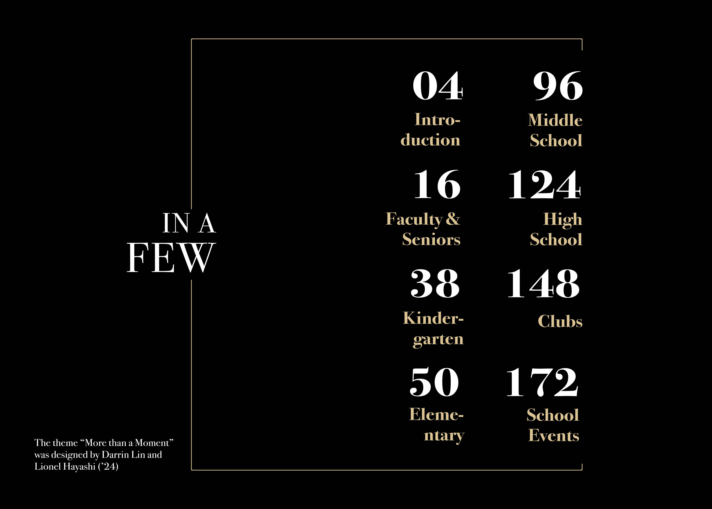

The layout of the words "in a few" resembles the title and is phrased with a tone that is formal and classy, adding to the theme. Credits to designers were put on the bottom-left which would be overly empty otherwise. That being said, there is a heavy emphasis on white space and cleanliness, shown most clearly in the left half of the page. The square lines extending from "in a few" to the right side of the page numbers serves the job of tying the two pages together, both through extending the element itself and through extending the gold color used in the text on the right page leftwards.
